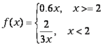
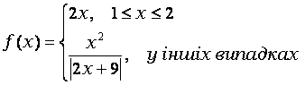
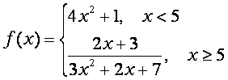
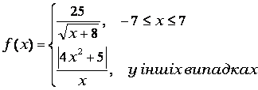

У цих задачах потрібно обчислити значення функції на якомусь інтервалі з відомим постійним кроком. Крок, це різниця між значеннями аргументу, для яких обчислюється значення функції.
Знайти значення функції y=x2 у інтервалу [10, 20] з кроком 1. Це означає, що необхідно обчислити значення функції для: x=10, 11, 12,…20.
Цю програму можна написати використовуючи алгоритм попереднього завдання. Це можна тому що крок в цій задачі дорівнює 1 та співпадає з зміною параметра циклу. Заголовок циклу у нас буде for x:=10 to 20 do і зміна значення аргументу буде виконуватись автоматично, у заголовку циклу.
| Програма | Пояснення |
|---|---|
|
var x,y:integer; begin for x:=10 to 20 do begin y:=sqr(x); writeln(x,y:5); end; end. |
В цій програмі використовується форматований вивід цілих чисел. Для цілого числа y відводиться 5 позицій, а саме число займає 3 позиції. Тому зліва воно доповнюється двома пробілами і між значенням аргументу і значенням функції буде два пробіли. |
| Екран |
|---|
|
10 100 11 121 12 144 13 169 14 196 15 225 16 256 17 289 18 324 19 361 20 400 |
Знайдіть значення функції y=x2 для x з інтервалу [2, 3] з кроком 0,1.
Це означає, що необхідно обчислити значення функції для:
x=2.0, 2.1, 2.2, 2.3, 2.4, 2.5, 2.6, 2.7, 2.8, 2.9, 3.0.
Тобто потрібно обчислити значення функції для 11 значень аргументу.
У загальному вигляді для інтервалу [a, b] та кроку h кількість значень аргументу (n) обчислюється за формулою: n=(b-a)/h+1.
У нас a=2, b=3, h=0,1. Тому n=11.
В цій програмі ми не можемо використовувати попередній алгоритм, тому що крок не співпадає з зміною параметру циклу. Тому зміну значення аргументу будемо виконувати оператором x:=x+h у тілі циклу.
Вхідні:
Вихідні:
Проміжні:
|
const a=2;b=3;h=0.1; var x,y:real; i,n:integer; begin n:=round((b-a)/h)+1; x:=a; for i:=1 to n do begin y:=sqr(x); writeln(x:3:1,y:5:2); x:=x+h; end; end. |
| Вивід |
|---|
|
2.0 4.00 2.1 4.41 2.2 4.84 2.3 5.29 2.4 5.76 2.5 6.25 2.6 6.76 2.7 7.29 2.8 7.84 2.9 8.41 3.0 9.00 |
Знайдіть значення функції для x з інтервалу [2, 3] з кроком 0,1.
В цій програмі можна повністю використовувати попередній алгоритм, але для обчислення значення функції використовуються різні формули в залежності від значення аргументу.
|
const a=2;b=3;h=0.1; var x,y:real; i,n:integer; begin n:=round((b-a)/h)+1; x:=a; for i:=1 to n do begin if x<2.5 then y:=sqr(x) else y:=sqr(x)*x; writeln(x:3:1,y:7:2); x:=x+h; end; end. |
| Вивід |
|---|
|
2.0 4.00 2.1 4.41 2.2 4.84 2.3 5.29 2.4 5.76 2.5 6.25 2.6 17.58 2.7 19.68 2.8 21.95 2.9 24.39 3.0 27.00 |
Знайдіть значення функції Y на вказаному інтервалі з вказаним кроком:
| № варіанту | Функція | Інтервал | Крок |
|---|---|---|---|
| 1 | [1, 5] | 0,25 | |
| 2 | | [-10, 10] | 2,5 |
| 3 | [-7, 8] | 1,5 | |
| 4 | [-3, 3] | 0,5 | |
| 5 | | [-2, 2] | 0,25 |
| 6 | [0, 2] | 0,1 | |
| 7 | [0, 12] | 1,5 | |
| 8 | [3, 5] | 0,2 | |
| 9 |  | [1, 4] | 0,2 |
| 10 | [-2, 2] | 0,4 | |
| 11 |  | [-3, 3] | 0,5 |
| 12 | [0,15] | 1,5 | |
| 13 |  | [-10,10] | 2,5 |
| 14 | [-5, 10] | 1,5 | |
| 15 | [-6, 6] | 1,5 | |
| 16 |  | [-11, 11] | 2,75 |